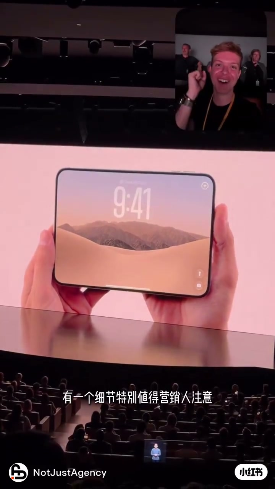
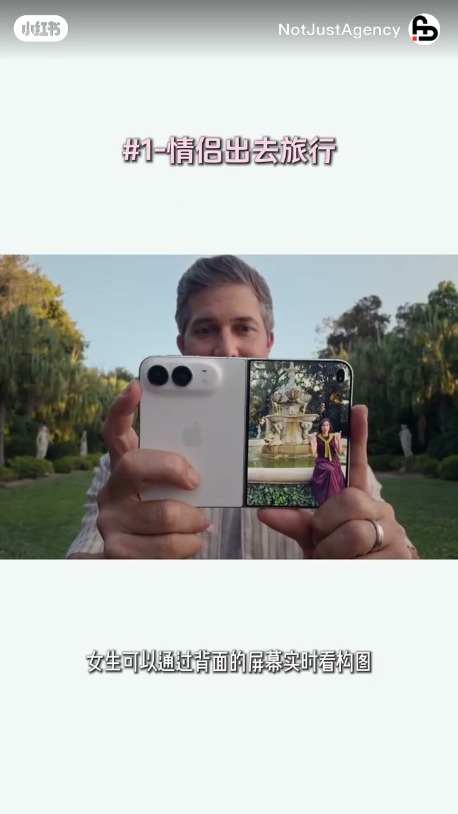
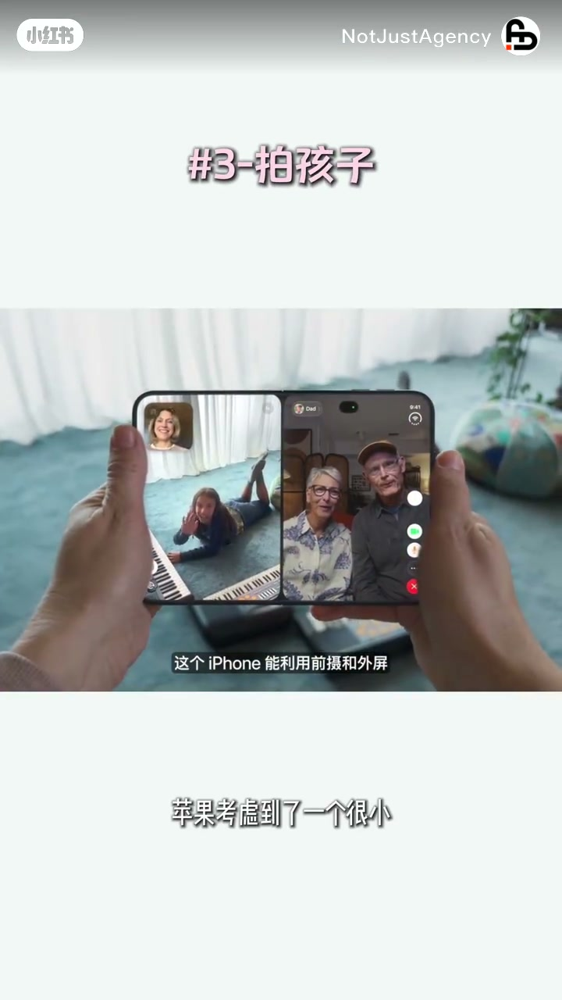
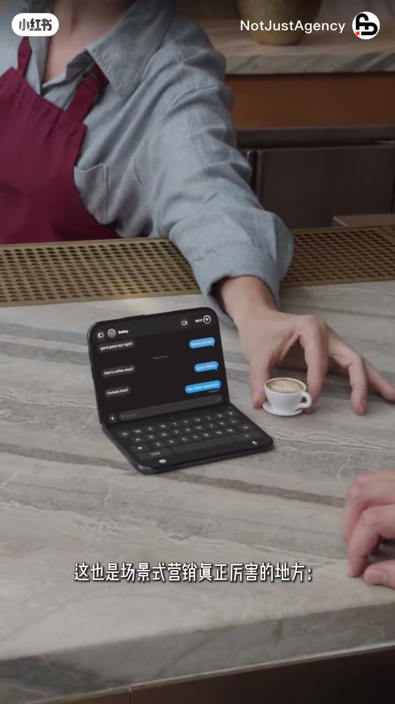
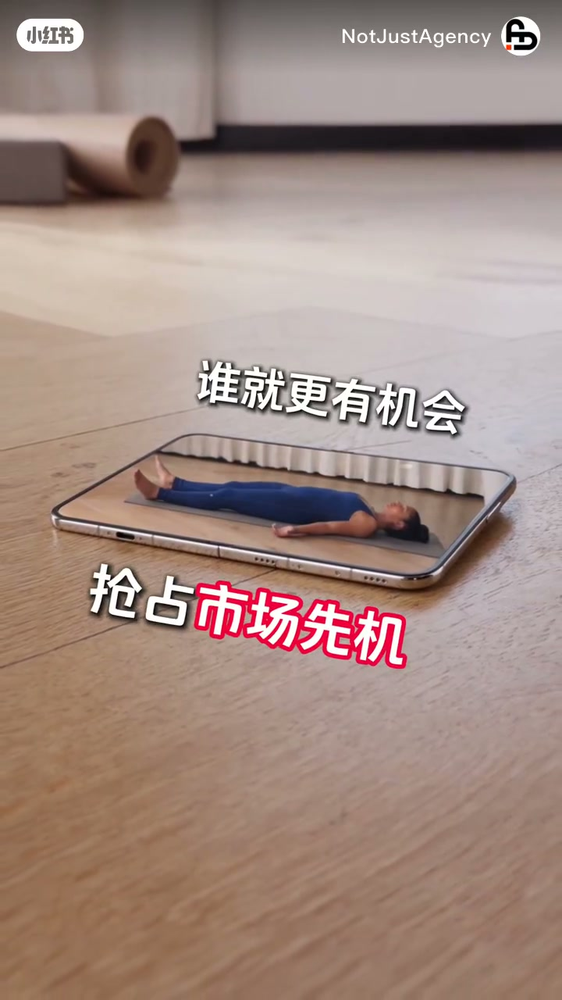

内容要点
知识结构
苹果没急着解释「为什么需要折叠屏」，而是先展示生活瞬间里它会更方便——这一细节被作者点为营销人必看。
男生负责拍照，女生用背面屏幕实时看构图；从「拍完我看看」变成「我自己就能看到」，少因不出片吵架。
手机往那一立即可当三脚架，不用加机器、倒计时，也不用全家卡时间往镜头里跑；AI 判断准备好后自动完成拍摄。
孩子不愿看镜头是小而棘手的问题；苹果不继续教育用户「怎么拍」，而是设计让孩子主动看过来的方式。
作者认为这次卖的是重新设计过的生活场景；场景式营销把「产品有什么功能」改写成「消费者什么时候需要」。普通消费者更关心少一点麻烦，而非技术多炫。
海外营销别停在卖点英译；应洞察当地未说出口的需求，做成具体可传播的生活场景。最好的营销是让人看见场景后主动说：「原来我真的需要这个。」
苹果用三个可感场景示范「场景式营销」：先让人看见「什么时候需要」，再谈技术与功能；出海品牌应把未说出口的需求做成可传播场景，而非只翻译卖点。
图文实录
开场：营销人该盯的那个细节
视频以 iPhone Duo 发布为切口。作者（NotJustAgency）开场就框定受众：有一个细节特别值得营销人注意（Whisper 记作「影响人」，画面字幕与标题均作「营销人」）。苹果「根本没急着告诉你为什么你需要一台折叠屏」，而是直接展示生活里哪些瞬间「有它会更方便」。画面切入发布会大屏上的折叠机锁屏与现场观众，把「先场景、后理由」钉在开场。

场景一：情侣旅行，背面屏幕实时看构图
第一个生活切片标为「#1 情侣出去旅行」：男朋友负责拍照，女生通过背面屏幕实时看构图。作者用前后对比收紧痛点——以前是「拍完我看看」，现在是「我自己就能看到」，「不用再因为不出片吵架了」。画面上手机背面副屏正显示被摄者站姿与构图，把「双面显示」写成关系里的省心，而不是参数表。

场景二：家庭骑行，立机即三脚架 + AI 自动拍
第二个切片「#2 一家人带孩子户外骑行」：手机往那一立（转录「往内一立」，画面与笔记文案作「往那一立」），就能直接当三脚架——不用加机器、不用设倒计时，甚至不用一家人卡着时间往镜头里跑。作者补上自动化一笔：AI 会判断大家准备好了，再自动完成拍摄。画面里半折立起的手机取景家庭骑行，把「形态即脚架」说成少带器材的便利。
场景三：拍孩子——不教育用户，让孩子主动看过来
第三个切片「#3 拍孩子」。作者强调苹果抓住了一个很小但非常棘手的问题：小朋友根本不愿意看镜头。关键转折是方法选择——「他没有继续教育用户怎么拍，而是想办法让孩子主动看过来」。画面演示折叠机双屏：一侧是孩子挥手，一侧是视频通话中的长辈，机身字幕提到可利用前摄与外屏。这里作者把硬件能力写成「降低劝说成本」，而不是「再教家长三招」。

命题：卖的是生活场景，不是折叠屏
三个切片之后，作者收束产品叙事：「你会发现苹果这次卖的其实不是折叠屏，它卖的是一个个被重新设计过的生活场景。」并点名这是场景式营销（转录「场景是影响」）真正厉害的地方——从「我的产品有什么功能」变成「消费者什么时候会需要这个功能」。除了果粉，普通消费者不会关心技术多创新、功能多炫酷，更关心「能不能让我少一点麻烦」。画面切到咖啡台笔记本形态与手持展开的主屏，字幕同步推进这一命题。

出海启示：别只翻译卖点，要做成可传播场景
作者把同一逻辑推到出海品牌：很多海外营销还停留在「把卖点翻译成英文」；真正的全球化营销应再往前——洞察当地消费者还没明确说出口的需求，再把它变成具体、真实、可传播的生活场景。谁能更早替消费者想到「我可能需要什么」，谁就更有机会抢占市场先机。结尾给出营销定义式收束：最好的营销不是等消费者说「我想要」，而是让消费者看到场景之后主动说一句——「原来我真的需要这个。」画面以平放展开的大屏与「抢占市场先机」字幕收尾。
